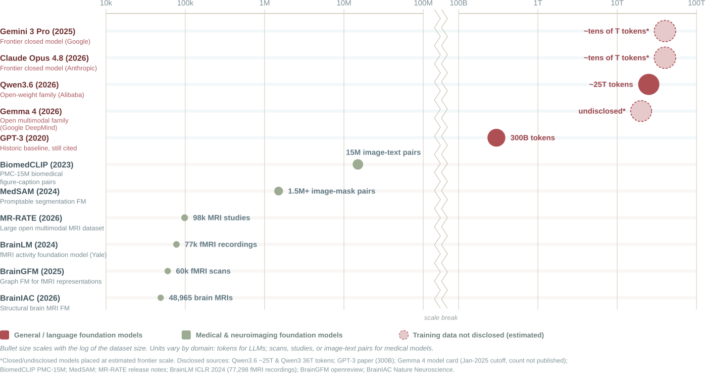
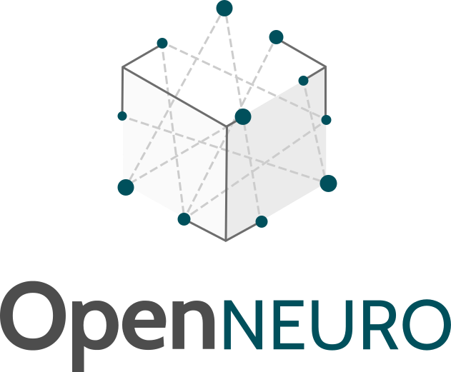
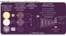
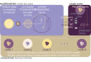

State of the Art and Future of Federated Learning in Neuroimaging
From Methods to Platforms
Sergey Plis


Data Is the New Oil (Again)
Large, diverse cohorts are the foremost need in neuroimaging
-
Statistical power for tiny effects
Brain–behavior $r$ is small; reproducible BWAS need $N$ in the thousands.
-
Generalization beyond one scanner
Multi-site heterogeneity acts as a regularizer toward protocol-invariant signal.
-
Representativeness & equity
Cohorts are WEIRD- and ancestry-skewed; diversity is both a validity and a fairness argument.
-
Rare conditions & subtypes.
No single center has the cases; multi-site is the only way to build the cohort.
…and Foundation Models Are Hungry

yet, globally, we have amassed
>1 billion MRI scans
>1 billion MRI scans
Data Mining Approaches

fully shared, centralized store
- Statistical power for tiny effects
- Generalization beyond one scanner
- Representativeness & equity
- Rare conditions & subtypes
- Full access to anonymized data
- Only data that can be openly shared
data never leaves the site
Everything OpenNeuro, plus…
- Privacy, regulation & governance
- Logistics & continual data
- Incentives & trust
- No access to raw data — by design
- Manual meta-analysis, mostly
Automation
the pipeline runs itself
Everything ENIGMA, plus…
- Enables iterative algorithms
- Simplifies single-shot methods
- Dramatically faster — no waiting on coordination & DUAs
Pillars of Federated Neuroimaging
1 · Methods
specific analyses & models, made federated
VBM · ICA/dFNC · brain age · AD
2 · Frameworks
reusable engines, FAIR & harmonization plumbing
Fed-BioMed · Nipoppy · Neurobagel · NV FLARE
3 · Platforms
turnkey systems that run vetted pipelines across sites
COINSTAC · NeuroFLAME
Federated Analysis vs Federated Learning
Analysis
stats / normative / ICA / VBM
Learning
train ML / deep nets
Who Lives Where in This Landscape?
- Bayer — PCNtoolkit (federated normative models) · Cat 1+2, analysis
- Wang — Nipoppy / Neurobagel / Fed-BioMed · Cat 1+2, FL infra
- Lorenzi — Fed-BioMed, robustness, unlearning · Cat 1+2, strong privacy
- COINSTAC / NeuroFLAME · Cat 3
Category 1: Methods & Applications
Classical analyses
Federated VBM, ICA/dFNC, normative models
ML / deep
Brain age, AD prediction, reconstruction
Category 2: Frameworks & Infrastructure
Fed-BioMed
Nipoppy / Neurobagel
NV FLARE, Vantage6…
Engines, FAIR workflows, harmonization
Category 3: Neuro Platforms
COINSTAC
NeuroFLAME
on NV FLARE
GUI, vetted pipelines, Vaults, privacy-aware
Challenges of Federating Models
Sparse Federated Models
- Huge models → impossible bandwidth
- Federate only a sparse subnetwork
- 50% sparse: matches dense
- 90% sparse: 10× less comms, <10% drop
- Foundation-scale FL becomes feasible
Gender classification, ABCD MRI (21 sites)
Federated Foundation Encoders

Inside-Out Federated Learning

North Star: Zero-Install, Privacy-First UX
Brainchop
local, in-browser, no install, data never leaves device
NeuroFLAME
federated training & analysis — almost this easy